Bioquímica: la química de la vida
title: “Bioquímica: la química de la vida”
Introducción
La bioquímica estudia la composición química y la estructura del cuerpo humano y de los demás organismos, las reacciones químicas que ocurren dentro de ellos y los fármacos y otras sustancias que interactúan con esos procesos {#sec-farmacos}(Pauling 1988, cap. 24). Todas nuestras ideas sobre la vida involucran reacciones químicas: el organismo se reproduce, ingiere alimentos, los somete a reacciones que liberan energía y secreta parte de los productos, un conjunto de cambios que se llama metabolismo(Pauling 1988, sec. 24–1).
La frontera entre lo vivo y lo inerte resulta esquiva, como muestra el virus del mosaico del tomate: colocada sobre una hoja, una partícula convierte gran parte del material de las células en copias de sí misma, pero no crece, no se alimenta ni envejece (Pauling 1988, sec. 24–1). Si definimos organismo como estructura capaz de reproducirse, los virus vegetales son seres vivos; si exigimos además actividad metabólica, son moléculas de masa molecular cercana a diez millones que catalizan la síntesis de copias de sí mismas (Pauling 1988, sec. 24–1).
Muchas moléculas biológicas son enormes porque los organismos las construyen a partir de sustancias simples del medio; la síntesis exige energía porque la mayoría de las reacciones son endotérmicas, y la fuente última de esa energía es el Sol, que las plantas convierten por fotosíntesis en alimento utilizable por los animales (Brown et al. 2012, sec. 24.6). En términos termodinámicos, la organización vital implica una entropía mucho menor que la de las materias primas, de modo que los sistemas vivos deben trabajar sin cesar contra la tendencia espontánea al aumento del desorden (Brown et al. 2012, sec. 24.6).
Esa lucha contra la entropía descansa sobre polímeros gigantes llamados biopolímeros, clasificables en tres grandes familias: las proteínas, los polisacáridos y los ácidos nucleicos, a las que se suman los lípidos, moléculas grandes que no son polímeros (Brown et al. 2012, sec. 24.6). El puente de hidrógeno y la geometría molecular, vistos en los capítulos de estados de la materia (De las moléculas a la materia condensada: fuerzas intermoleculares) y de enlace (El modelo VSEPR: dominios de electrones), gobiernan el plegamiento y el reconocimiento de estas moléculas, por lo que este capítulo los usará como herramientas continuas (Brown et al. 2012, sec. 24.6).
Los aminoácidos: ladrillos de las proteínas
Las proteínas son macromoléculas presentes en todas las células vivas, y suponen alrededor del cincuenta por ciento de la masa seca del cuerpo humano: unas son componentes estructurales de la piel, las uñas, el cartílago y los músculos, y otras catalizan reacciones, transportan oxígeno o actúan como hormonas reguladoras {#sec-aminoacidos-proteinas}(Brown et al. 2012, sec. 24.7). Todas son químicamente semejantes, pues están compuestas por moléculas más pequeñas llamadas aminoácidos, que contienen un grupo amino, ─NH₂, y un grupo ácido carboxílico, ─COOH (Brown et al. 2012, sec. 24.7).
Los aminoácidos de las proteínas son alfa-aminoácidos, con el grupo amino unido al carbono contiguo al carboxilo, llamado carbono alfa (Brown et al. 2012, sec. 24.7). El más simple es la glicina, CH₂(NH₂)COOH, y los demás llevan en el carbono alfa un grupo R característico, con la fórmula general CHR(NH₂)COOH, de modo que al calentar una proteína con ácidos o bases se hidroliza en sus aminoácidos constituyentes (Pauling 1988, sec. 24–3).
\[ \mathrm{H_2NCH_2COOH \rightleftharpoons {}^{+}H_3NCH_2COO^{-}} \tag{25.1}\]
En disolución acuosa, el grupo amino es bastante básico y el carboxilo bastante ácido, de modo que un protón se transfiere del carboxilo al amino y la molécula queda internamente ionizada, como muestra la Ecuación Ecuación 25.1 para la glicina en la forma llamada zwitterión (véase Ácidos carboxílicos y el comportamiento anfiprótico de los aminoácidos)(Pauling 1988, sec. 24–3). A valores de pH cercanos a siete, los fluidos animales y vegetales, los grupos amino y carboxilo de la mayoría de los aminoácidos están ionizados de esta manera dentro de la misma molécula (Pauling 1988, sec. 24–3).
Pauling reconoce veintitrés aminoácidos como constituyentes importantes de las proteínas, mientras que Brown identifica veintidós en la naturaleza y muestra los veinte que se encuentran en los seres humanos: la discrepancia refleja ediciones distintas y el descubrimiento progresivo de especies raras (Pauling 1988, sec. 24–3; Brown et al. 2012, sec. 24.7).
La divergencia se repite en los esenciales: Pauling cuenta nueve aminoácidos que el hombre no puede fabricar y debe ingerir, mientras Brown sostiene que el cuerpo sintetiza diez de los veinte y que los otros diez deben provenir de la dieta (Pauling 1988, sec. 24–3; Brown et al. 2012, sec. 24.7). Ambas posturas coexisten: la lista de Pauling recoge histidina, lisina, triptófano, fenilalanina, leucina, isoleucina, treonina, metionina y valina, y la de Brown añade la arginina según criterios nutricionales más recientes (Pauling 1988, sec. 24–3; Brown et al. 2012, sec. 24.7).
Los aminoácidos son quirales, pues el carbono alfa lleva cuatro grupos distintos, excepto la glicina; la Figura Figura 25.1 muestra los dos enantiómeros de la alanina (Brown et al. 2012, sec. 24.7). Un hecho extraordinario es que solo uno de los dos enantiómeros aparece en las proteínas animales y vegetales, con la misma configuración en todos: la L, de modo que las proteínas se construyen íntegramente con L-aminoácidos (Pauling 1988, sec. 24–3). Se ignora por qué la vida eligió el sistema L; las excepciones conocidas son escasas, con residuos D en unos pocos péptidos simples y en las proteínas de las paredes celulares bacterianas (Pauling 1988, sec. 24–3; Brown et al. 2012, sec. 24.7).
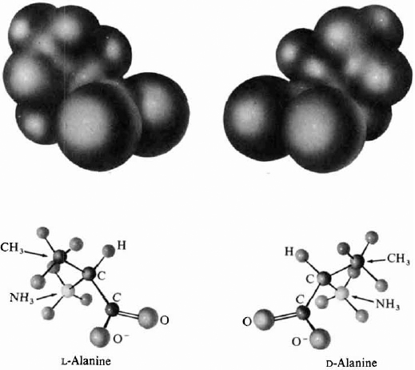
El enlace peptídico y los polipéptidos
Los aminoácidos se unen en las proteínas mediante grupos amida, y cada grupo amida formado entre aminoácidos se llama enlace peptídico, producto de una reacción de condensación entre el grupo carboxilo de un aminoácido y el grupo amino de otro con eliminación de agua (Brown et al. 2012, sec. 24.7). Entre 1900 y 1910, el químico alemán Emil Fischer obtuvo pruebas sólidas de que los aminoácidos se combinan en cadenas largas llamadas polipéptidos; dos moléculas de glicina se condensan en glicilglicina con pérdida de agua, y el proceso puede continuar hasta formar cadenas larguísimas (Pauling 1988, sec. 24–3; Brock 2015, cap. 6).
\[ \mathrm{H_2NCH(CH_3)COOH + H_2NCH_2COOH \longrightarrow H_2NCH(CH_3)CONHCH_2COOH + H_2O} \tag{25.2}\]
La Ecuación Ecuación 25.2 muestra la condensación de alanina y glicina para dar el dipéptido glicilalanina; el aminoácido que aporta el grupo carboxilo se nombra primero con terminación -il, y la molécula se abrevia Gly-Ala o GA, con el grupo amino sin reaccionar a la izquierda y el carboxilo a la derecha (Brown et al. 2012, sec. 24.7). El edulcorante artificial aspartamo es el éster metílico del dipéptido formado por los aminoácidos ácido aspártico y fenilalanina, ejemplo cotidiano de la química de los péptidos (Brown et al. 2012, sec. 24.7).
Un polipéptido nace cuando un gran número de aminoácidos se encadena por enlaces peptídicos: las proteínas son polipéptidos lineales, sin ramificaciones, con masas moleculares entre seis mil y más de cincuenta millones de unidades de masa atómica (Brown et al. 2012, sec. 24.7). Como pueden combinarse hasta veintidós aminoácidos distintos en cientos de posiciones, el número de secuencias posibles es prácticamente ilimitado, y esa diversidad es la base química de la especificidad biológica (Brown et al. 2012, sec. 24.7).
La estructura primaria: la secuencia que manda
La secuencia de aminoácidos a lo largo de la cadena proteica se llama estructura primaria, y confiere a la proteína su identidad única: el cambio de un solo aminoácido puede alterar sus características bioquímicas (Brown et al. 2012, sec. 24.7). El método para contar cadenas emplea el fluorodinitrobenceno, que se une al grupo amino libre del extremo y forma un complejo coloreado identificable tras hidrolizar la proteína, y con él se demostró que la hemoglobina A humana contiene cuatro cadenas polipeptídicas, dos de clase alfa y dos de clase beta (Pauling 1988, sec. 24–3).
La primera secuencia completa fue la de la insulina, determinada entre 1945 y 1952 por Sanger y sus colaboradores: la molécula, de masa molecular cercana a doce mil, consta de cadenas unidas por puentes disulfuro entre mitades de residuos de cistina (Pauling 1988, sec. 24–3). La hemoglobina, esférica y de diámetro cercano a cuarenta angstroms, debe plegar sus cadenas; la cadena beta de la hemoglobina A humana tiene 146 residuos y comienza por val-his-leu, mientras la alfa tiene 141 y empieza por val-leu (Pauling 1988, sec. 24–3).
La anemia falciforme ilustra el poder de la secuencia: los pacientes llevan una hemoglobina S cuyas cadenas alfa son idénticas a las de la hemoglobina A, pero cuya cadena beta tiene un solo residuo distinto en la sexta posición, ácido glutámico en A y valina en S (Pauling 1988, sec. 24–3). La sustitución de un aminoácido con cadena lateral ácida por otro con cadena hidrocarbonada altera la solubilidad de la hemoglobina y obstruye el flujo sanguíneo normal, un efecto dramático de un cambio mínimo en la estructura primaria (Brown et al. 2012, sec. 24.7).
La estructura secundaria: hélice alfa y lámina beta
Las proteínas no son cadenas flexibles con formas aleatorias, sino que se autoensamblan en estructuras regulares; la estructura secundaria describe cómo segmentos de la cadena se orientan en un patrón repetitivo (Brown et al. 2012, sec. 24.7). La disposición principal es la hélice alfa: la cadena polipeptídica se pliega en una hélice con unos 3,6 residuos por vuelta, unos dieciocho residuos en cinco vueltas, mantenida por puentes de hidrógeno entre los grupos N─H y el oxígeno del grupo C═O de vueltas vecinas (Figura Figura 25.2) (Pauling 1988, sec. 24–3). Las cadenas laterales R sobresalen radialmente de la hélice, con espacio de sobra para secuencias arbitrarias (Pauling 1988, sec. 24–3).
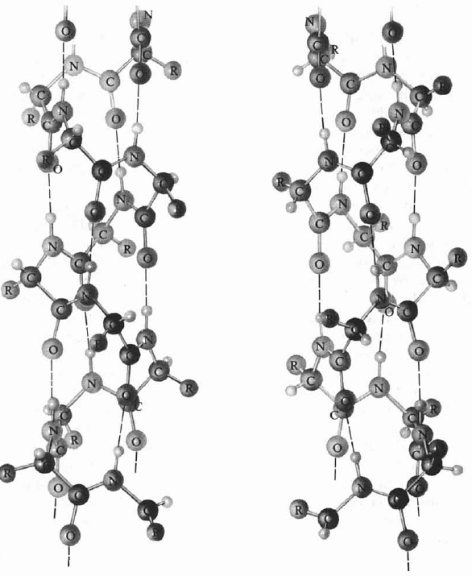
Muchas proteínas fibrosas, como las del cabello, las uñas, el cuerno y el músculo, consisten en cadenas con configuración de hélice alfa casi paralelas, a veces trenzadas como cuerdas (Pauling 1988, sec. 24–3). El cabello y el cuerno pueden estirarse hasta más del doble de su longitud: el proceso rompe los puentes de hidrógeno de la hélice y fuerza las cadenas a una configuración extendida (Pauling 1988, sec. 24–3).
La otra estructura secundaria común es la lámina beta, formada por dos o más hebras peptídicas que se unen por puentes de hidrógeno entre el N─H de una hebra y el C═O de la vecina (Figura Figura 25.3) (Brown et al. 2012, sec. 24.7). Las fibras de seda consisten en cadenas polipeptídicas con la configuración extendida unidas lateralmente por puentes de hidrógeno, como muestra la Figura Figura 25.3. El arreglo es posible para algunos aminoácidos pero no para otros, por lo que grandes proteínas alternan tramos helicoidales con tramos de ovillo aleatorio (Brown et al. 2012, sec. 24.7).
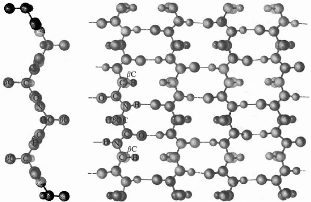
Los cuatro niveles de la estructura proteica se resumen en la Figura Figura 25.4: la secuencia lineal, el plegamiento regular local, la forma global plegada y el ensamblaje de varias subunidades, construidos jerárquicamente de modo que cada nivel depende del anterior y así se mantiene la estructura de la proteína nativa (Brown et al. 2012, fig. 24.20).
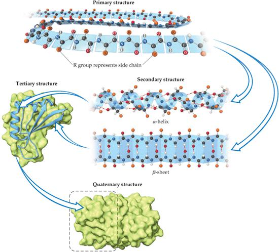
La estructura terciaria y cuaternaria: el plegamiento
Entre 1946 y 1960, Kendrew y sus colaboradores determinaron por difracción de rayos X la estructura completa de una proteína globular, la mioglobina, presente en el músculo y semejante a la hemoglobina pero con una sola cadena y masa molecular cercana a diecisiete mil (Pauling 1988, sec. 24–3).
La cadena no forma una hélice única, sino que se enrolla en ocho segmentos cortos de hélice alfa conectados por secciones no helicoidales: ese arreglo tridimensional de los segmentos regulares se llama estructura terciaria, y está determinada como la secundaria por la secuencia de aminoácidos (Pauling 1988, sec. 24–3). Brown da una masa molecular de unos dieciocho mil para la mioglobina, cifra que difiere ligeramente de la de Pauling por redondeos y condiciones de medida de distintos estudios, sin alterar la descripción estructural (Brown et al. 2012, sec. 24.7).
El plegamiento produce varias clases funcionales: las proteínas globulares se pliegan en formas compactas aproximadamente esféricas, solubles en agua y móviles dentro de las células, con funciones no estructurales como combatir invasiones, transportar y almacenar oxígeno o actuar como catalizadores (Brown et al. 2012, sec. 24.7). Las proteínas fibrosas alinean sus largos ovillos en paralelo para formar fibras insolubles que dan integridad estructural a músculos, tendones y cabello; las mayores proteínas conocidas, de más de veintisiete mil aminoácidos, son proteínas musculares (Brown et al. 2012, sec. 24.7).
La estructura terciaria se mantiene por muchas interacciones: la proteína globular en disolución acuosa pliega sus porciones no polares hacia el interior, alejadas del agua, mientras las cadenas laterales polares y ácidas sobresalen para interactuar con el disolvente mediante fuerzas ion-dipolo, dipolo-dipolo o puentes de hidrógeno (Brown et al. 2012, sec. 24.7). Ciertos pliegues conducen a arreglos de menor energía, más estables, y ese criterio energético explica por qué el plegamiento no es aleatorio (Brown et al. 2012, sec. 24.7).
Algunas proteínas son ensamblajes de más de una cadena; la disposición de las subunidades terciarias en la macromolécula funcional se llama estructura cuaternaria (Brown et al. 2012, sec. 24.7). La investigación de Perutz mostró que la hemoglobina es un agregado de cuatro grupos, cada uno parecido a una mioglobina y con su cadena polipeptídica, y cada subunidad contiene un grupo hemo con un átomo de hierro que une oxígeno (Pauling 1988, sec. 24–3; Brown et al. 2012, sec. 24.7). La estructura cuaternaria se mantiene por las mismas interacciones que la terciaria (Brown et al. 2012, sec. 24.7).
La desnaturalización
Una proteína que conserva sus propiedades características se llama proteína nativa: la hemoglobina tal como existe en el glóbulo rojo, capaz de combinarse reversiblemente con oxígeno, es hemoglobina nativa (Pauling 1988, sec. 24–3). Muchas proteínas pierden sus propiedades con facilidad, y entonces se dice que se han desnaturalizado: la hemoglobina se desnaturaliza simplemente calentando su disolución a sesenta y cinco grados, coagulando en un coágulo rojo ladrillo insoluble (Pauling 1988, sec. 24–3).
La clara de huevo es una disolución principalmente de la proteína soluble ovoalbúmina, de masa molecular 43 000; al calentarla durante un rato a unos sesenta y cinco grados, la ovoalbúmina se desnaturaliza y forma el coágulo blanco insoluble que se observa al cocinar un huevo (Pauling 1988, sec. 24–3). Se cree que la desnaturalización implica el desenrollado de las cadenas polipeptídicas desde la estructura característica de la proteína nativa (Pauling 1988, sec. 24–3).
En el coágulo, las cadenas desenrolladas de diferentes moléculas se enredan unas con otras de modo que no pueden separarse, y por eso la proteína desnaturalizada es insoluble (Pauling 1988, sec. 24–3). Algunos agentes químicos, como los ácidos fuertes, los álcalis fuertes y el alcohol, son buenos desnaturalizantes, lo que explica usos cotidianos como el alcohol antiséptico (Pauling 1988, sec. 24–3).
Los carbohidratos: monosacáridos
Los carbohidratos son sustancias naturales abundantes en plantas y animales; su nombre, hidrato de carbono, proviene de las fórmulas empíricas de la mayoría, que pueden escribirse como Cₓ(H₂O)ᵧ, como la glucosa, C₆H₁₂O₆ o C₆(H₂O)₆ {#sec-carbohidratos}(Brown et al. 2012, sec. 24.8). En realidad no son hidratos de carbono, sino polihidroxialdehídos y polihidroxicetonas: la glucosa, el carbohidrato más abundante, es un azúcar aldehídico de seis carbonos, mientras la fructosa, el azúcar común de las frutas, es un azúcar cetónico de seis carbonos (Brown et al. 2012, sec. 24.8).
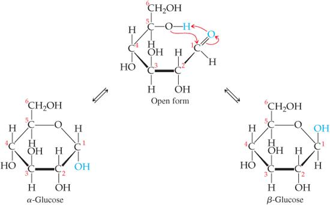
La molécula de glucosa, con sus grupos alcohol y aldehído y una columna vertebral flexible, puede formar un anillo de seis miembros, y en disolución acuosa solo un pequeño porcentaje permanece en la forma abierta (Brown et al. 2012, sec. 24.8). El anillo posee dos orientaciones relativas: en la forma alfa, el OH del C1 y el CH₂OH del C5 apuntan en direcciones opuestas, y en la forma beta apuntan en la misma dirección (Figura Figura 25.5) (Brown et al. 2012, sec. 24.8). Aunque la diferencia parece pequeña, tiene consecuencias biológicas enormes, incluida la vasta diferencia de propiedades entre el almidón y la celulosa (Brown et al. 2012, sec. 24.8).
Los carbonos 2, 3, 4 y 5 de la forma abierta de la glucosa tienen cuatro grupos distintos unidos, de modo que la molécula contiene cuatro carbonos quirales, mientras la fructosa contiene tres (Brown et al. 2012, sec. 24.8). Los monosacáridos son azúcares simples que no pueden romperse en moléculas más pequeñas por hidrólisis con ácidos acuosos, y entre ellos se cuentan la glucosa y la fructosa (Brown et al. 2012, sec. 24.8).
Disacáridos y polisacáridos
Dos unidades de monosacárido pueden unirse por condensación para formar un disacárido, como la sacarosa, el azúcar de mesa, y la lactosa, el azúcar de la leche (Figura Figura 25.6) (Brown et al. 2012, sec. 24.8). Todos los azúcares son dulces pero en grados distintos: la sacarosa es unas seis veces más dulce que la lactosa, ligeramente más dulce que la glucosa y solo la mitad de dulce que la fructosa (Brown et al. 2012, sec. 24.8).
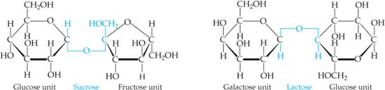
\[ \mathrm{C_{12}H_{22}O_{11} + H_2O \longrightarrow C_6H_{12}O_6 + C_6H_{12}O_6} \tag{25.3}\]
Los disacáridos reaccionan con agua en presencia de un catalizador ácido para hidrolizarse en sus monosacáridos: al hidrolizar sacarosa se forma una mezcla de glucosa y fructosa llamada azúcar invertido, más dulce que la sacarosa original y responsable del jarabe dulce de frutas enlatadas y caramelos (Ecuación Ecuación 25.3) (Brown et al. 2012, sec. 24.8).
Los polisacáridos están formados por muchas unidades de monosacárido unidas, y los más importantes son el almidón, el glucógeno y la celulosa, los tres construidos con unidades repetidas de glucosa (Brown et al. 2012, sec. 24.8). El almidón es un grupo de polisacáridos vegetales que almacenan alimento en semillas y tubérculos: el maíz, las papas, el trigo y el arroz contienen cantidades sustanciales, y las enzimas del sistema digestivo catalizan su hidrólisis a glucosa (Brown et al. 2012, sec. 24.8). En el almidón las unidades de glucosa están en forma alfa, con los oxígenos puente apuntando en una dirección y los grupos CH₂OH en la opuesta (Figura Figura 25.7) (Brown et al. 2012, sec. 24.8).
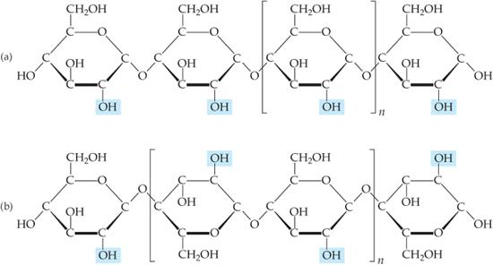
El glucógeno es una sustancia semejante al almidón sintetizada en el cuerpo animal, con masas moleculares desde cinco mil hasta más de cinco millones de unidades de masa atómica, que actúa como banco de energía concentrado en músculos e hígado (Brown et al. 2012, sec. 24.8). La celulosa forma la unidad estructural principal de las plantas: la madera es alrededor de un cincuenta por ciento celulosa y el algodón casi completamente celulosa, con cadenas no ramificadas de unidades de glucosa en forma beta con cada oxígeno puente apuntando en la misma dirección que el CH₂OH del anillo contiguo (Brown et al. 2012, sec. 24.8).
Las enzimas que hidrolizan el almidón no hidrolizan la celulosa, por lo que se puede comer una libra de celulosa sin valor calórico mientras que una libra de almidón representaría una ingesta sustancial (Brown et al. 2012, sec. 24.8). Las bacterias que contienen enzimas llamadas celulasas hidrolizan la celulosa y habitan el sistema digestivo de animales pastadores como el ganado, que la usan como alimento (Brown et al. 2012, sec. 24.8).
Los lípidos: grasas y aceites
Los lípidos son una clase diversa de moléculas biológicas no polares usadas por los organismos para almacenar energía a largo plazo, en forma de grasas y aceites, y como elementos de estructuras biológicas como fosfolípidos, membranas celulares y ceras {#sec-lipidos}(Brown et al. 2012, sec. 24.9). Las grasas se derivan del glicerol, un alcohol con tres grupos OH, y de los ácidos grasos, ácidos carboxílicos RCOOH en los que R es una cadena hidrocarbonada de generalmente dieciséis a diecinueve carbonos (Brown et al. 2012, sec. 24.9).
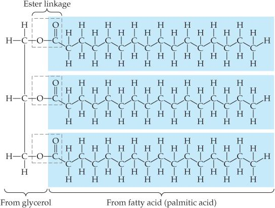
Glicerol y ácidos grasos experimentan reacciones de condensación para formar enlaces éster: tres moléculas de ácido graso se unen a un glicerol, y los tres ácidos pueden ser iguales o distintos (Figura Figura 25.8) (Brown et al. 2012, sec. 24.9). Los lípidos con ácidos grasos saturados se llaman grasas saturadas y suelen ser sólidos a temperatura ambiente, como la mantequilla y la manteca, mientras las grasas insaturadas contienen uno o más dobles enlaces y suelen ser líquidos de origen vegetal, como el aceite de oliva y el de maní (Brown et al. 2012, sec. 24.9).
La nomenclatura cis-trans de los alquenos se aplica a las grasas: las grasas trans tienen hidrógenos en lados opuestos del doble enlace y las cis en el mismo lado, y el componente principal del aceite de oliva, del sesenta al ochenta por ciento, es el ácido oleico, cis-CH₃(CH₂)₇CH═CH(CH₂)₇COOH (Brown et al. 2012, sec. 24.9). El ácido oleico es monoinsaturado, con un solo doble enlace, mientras los ácidos poliinsaturados tienen más de uno en la cadena (Brown et al. 2012, sec. 24.9).
Las grasas trans no son nutricionalmente requeridas y el proceso que las introduce en los alimentos es la hidrogenación, que convierte aceites insaturados en mantecas saturadas con grasas trans como subproducto (Brown et al. 2012, sec. 24.9). Los ácidos grasos esenciales llevan sus dobles enlaces a tres o seis carbonos del extremo ─CH₃, y por eso se llaman omega-3 y omega-6, donde omega designa el último carbono de la cadena, contando el carboxilo como el primero o alfa (Brown et al. 2012, sec. 24.9).
Los fosfolípidos y las membranas
Los fosfolípidos son semejantes en estructura a las grasas, pero llevan solo dos ácidos grasos unidos al glicerol; el tercer grupo alcohol se une a un grupo fosfato, que a su vez puede enlazar un grupo pequeño cargado o polar como la colina (Figura Figura 25.9) (Brown et al. 2012, sec. 24.9). La diversidad de los fosfolípidos se basa en las diferencias entre sus ácidos grasos y entre los grupos unidos al fosfato (Brown et al. 2012, sec. 24.9).
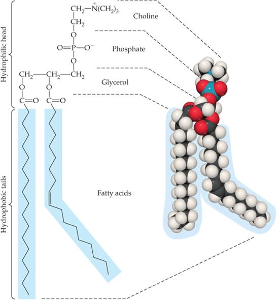
En el agua, los fosfolípidos se agrupan con sus cabezas polares cargadas hacia el agua y sus colas no polares hacia adentro, formando una bicapa lipídica que es un componente clave de las membranas celulares (Figura Figura 25.10) (Brown et al. 2012, sec. 24.9). La bicapa se estabiliza por las interacciones favorables de las colas hidrofóbicas, que apuntan lejos del agua tanto interior como exterior de la célula, mientras las cabezas cargadas miran a los dos medios acuosos (Brown et al. 2012, sec. 24.9).
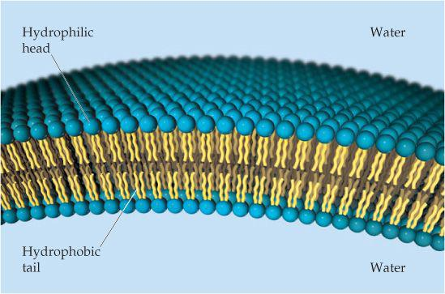
Los ácidos nucleicos: nucleótidos y polinucleótidos
Los ácidos nucleicos son biopolímeros portadores de la información genética: los ácidos desoxirribonucleicos (ADN) son moléculas gigantes con masas moleculares de seis a dieciséis millones de unidades de masa atómica, mientras los ácidos ribonucleicos (ARN) son menores, de veinte mil a cuarenta mil {#sec-acidos-nucleicos-adn}(Brown et al. 2012, sec. 24.10). El ADN se encuentra principalmente en el núcleo de la célula y el ARN sobre todo fuera de él, en el citoplasma: el ADN almacena la información genética y especifica qué proteínas puede sintetizar la célula, y el ARN transporta esa información al citoplasma para usarla en la síntesis proteica (Brown et al. 2012, sec. 24.10).
Los monómeros de los ácidos nucleicos, llamados nucleótidos, se forman con un azúcar de cinco carbonos, una base orgánica nitrogenada y un grupo fosfato (Figura Figura 25.11) (Brown et al. 2012, sec. 24.10). El azúcar del ARN es la ribosa, y el del ADN la desoxirribosa, que difiere de la ribosa solo en tener un átomo de oxígeno menos en el carbono dos (Brown et al. 2012, sec. 24.10).
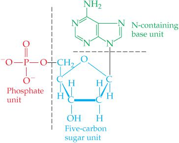
Existen cinco bases nitrogenadas: adenina, guanina y citosina aparecen en el ADN y el ARN; la timina solo en el ADN y el uracilo solo en el ARN (Brown et al. 2012, sec. 24.10). Las cadenas de ARN y ADN son polinucleótidos formados por condensación entre un OH de ácido fosfórico de un nucleótido y un OH de azúcar de otro, de modo que el esqueleto alterna azúcares y fosfatos con las bases colgando como grupos laterales (Figura Figura 25.12) (Brown et al. 2012, sec. 24.10).
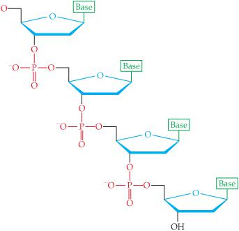
La doble hélice del ADN
Las cadenas de ADN se enrollan juntas en una doble hélice, mantenida por atracciones entre las bases T, A, C y G que involucran fuerzas de dispersión, dipolo-dipolo y puentes de hidrógeno (Brown et al. 2012, sec. 24.10). En 1953, usando excelentes patrones de difracción de rayos X obtenidos por Wilkins, Watson y Crick propusieron que las moléculas de ADN consisten en dos cadenas enrolladas una sobre otra en configuración helicoidal, de modo que en cada nivel, a 3,3 angstroms a lo largo del eje, hay una purina y una pirimidina en pares complementarios (Figura Figura 25.13) (Pauling 1988, sec. 24–4).
El análisis químico del ADN de los núcleos celulares mostraba que, aunque la proporción de adenina y guanina varía de especie en especie, la relación adenina/timina es la unidad y también la relación guanina/citosina: en el esperma humano, por ejemplo, 31 por ciento de adenina, 19 de guanina, 31 de timina y 19 de citosina (Pauling 1988, sec. 24–4).
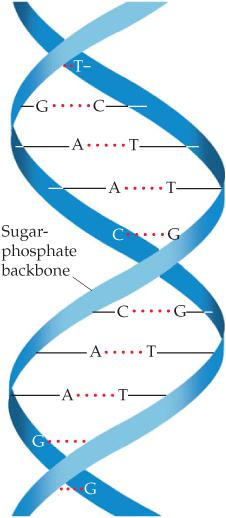
Las estructuras de timina y adenina las hacen parejas perfectas para el puente de hidrógeno, y lo mismo ocurre con citosina y guanina: adenina y timina forman dos puentes de hidrógeno, mientras citosina y guanina forman tres, como muestra la Figura Figura 25.14. En la doble hélice, cada timina de una cadena se opone a una adenina de la otra y cada citosina a una guanina, y esa complementariedad de los pares de bases es la clave para entender cómo funciona el ADN (Brown et al. 2012, sec. 24.10).
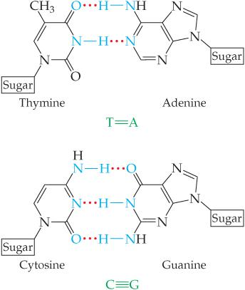
La replicación del ADN y el código genético
La doble hélice de cadenas complementarias comienza a desenrollarse durante la división celular, y sobre cada cadena vieja se sintetiza una nueva cadena complementaria, idéntica a la otra cadena vieja para conservar la complementariedad (Figura Figura 25.15) (Pauling 1988, sec. 24–4). Al completarse el proceso hay dos dobles hélices idénticas, cada una con una cadena vieja y una nueva, y ese carácter medio viejo medio nuevo se verificó mediante experimentos con isótopos trazadores como el nitrógeno quince (Pauling 1988, sec. 24–4). Este mecanismo de replicación permite transmitir la información genética cuando las células se dividen (Brown et al. 2012, sec. 24.10).
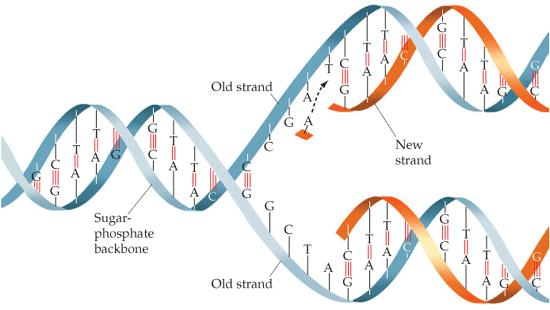
La secuencia de bases de un gen constituye un código que determina la naturaleza del carácter conferido al organismo: se cree que la secuencia determina la de los residuos de aminoácidos de las cadenas polipeptídicas sintetizadas bajo la influencia del gen (Pauling 1988, sec. 24–4). La síntesis proteica transfiere información de una de las cadenas de la doble hélice a moléculas de ARN mensajero, complementarias de la cadena de ADN, que llevan la información hasta el lugar de la síntesis con ayuda de enzimas (Pauling 1988, sec. 24–4).
Tres nucleótidos seleccionan un aminoácido para su incorporación a la cadena: el gen es una secuencia de palabras de tres letras llamadas codones, formadas con un alfabeto de cuatro letras, A, T, G y C para el ADN y A, U, G y C para el ARN (Pauling 1988, sec. 24–4). Para la cadena beta de la hemoglobina, de 146 residuos, se necesitan 146 codones, 438 letras más algunas para las señales de inicio y de parada, y cada ARN produce algunas decenas de miles de cadenas beta, pues hay cerca de cien millones de moléculas de hemoglobina en el glóbulo rojo maduro (Pauling 1988, sec. 24–4).
El código genético parece esencialmente el mismo en todos los organismos y es redundante, pues selecciona entre veinte aminoácidos con sesenta y cuatro palabras de tres letras, y la redundancia afecta sobre todo a la tercera letra (Pauling 1988, sec. 24–4). El desciframiento se ilustra con un experimento clásico: una disolución enzimática de células bacterianas con los veinte aminoácidos produce una cadena solo de fenilalanina cuando se le suministra ARN sintético de poli-uracilo, de modo que UUU es el codón de la fenilalanina, trabajo realizado por Nirenberg, Khorana y Holley con enzimas descubiertas por Kornberg y Ochoa (Pauling 1988, sec. 24–4).
El metabolismo y las enzimas
Las reacciones químicas que ocurren en un organismo vivo se llaman procesos metabólicos, del griego metabole, cambio (Pauling 1988, sec. 24–5). Los carbohidratos complejos, como el almidón, se rompen en azúcares simples durante la digestión y pasan a la sangre; los azúcares se convierten en el hígado en glucógeno, el almidón animal, con la misma fórmula que el almidón, (C₆H₁₀O₅)ₓ, que junto con otros polisacáridos constituye una fuente importante de energía al combinarse con oxígeno para dar dióxido de carbono y agua (Pauling 1988, sec. 24–5).
Muchas reacciones del cuerpo pueden reproducirse en el laboratorio: la proteína se descompone en aminoácidos hirviéndola con ácidos fuertes, y el azúcar arde en aire produciendo dióxido de carbono y agua (Pauling 1988, sec. 24–5). Pero no se ha logrado efectuar estas reacciones a la temperatura del cuerpo humano sin sustancias especiales obtenidas de plantas o animales: esas sustancias, las enzimas, son proteínas que poseen poder catalítico para ciertas reacciones, en el mismo sentido de la catálisis estudiada en el capítulo de cinética (Catálisis y enzimas)(Pauling 1988, sec. 24–5).
La saliva contiene una proteína especial, la amilasa salival o ptialina, que cataliza la descomposición del almidón en el azúcar maltosa, C₁₂H₂₂O₁₁, durante los primeros minutos en que el alimento está en la boca y el estómago (Pauling 1988, sec. 24–5). El estómago contiene pepsina, catalizador muy efectivo de la hidrólisis de las proteínas en aminoácidos, que trabaja mejor en disolución algo ácida: el jugo gástrico es bastante ácido, con pH cercano a 0,8, algo más ácido que el ácido clorhídrico 0,1 formal (Pauling 1988, sec. 24–5).
El estómago contiene además renina, que asiste la digestión de la leche, y lipasa, que cataliza la descomposición de las grasas en sustancias más simples; la digestión continúa en los intestinos con enzimas del jugo intestinal, el jugo pancreático y la bilis (Pauling 1988, sec. 24–5). Se estima que en el cuerpo humano puede haber entre veinte mil y treinta mil enzimas diferentes, cada una construida para catalizar una reacción particular útil al organismo, y la oxidación del azúcar, proceso complicado de muchas etapas, tendría una enzima especial para cada paso (Pauling 1988, sec. 24–5).
La energía de los alimentos
Los alimentos sirven como fuente de energía para hacer trabajo y calor mediante su oxidación con oxígeno extraído del aire y transportado por la hemoglobina; los productos finales de la oxidación de la mayor parte del hidrógeno y el carbono son agua y dióxido de carbono (Pauling 1988, sec. 24–5). La ingesta diaria de un hombre sano de tamaño medio con trabajo muscular moderado debe tener un calor total de combustión cercano a 3000 kilocalorías, del cual alrededor del noventa por ciento se aprovecha como trabajo y calor por la digestión y el metabolismo (Pauling 1988, sec. 24–5).
Las grasas y los carbohidratos son las fuentes principales de energía: la grasa pura tiene un valor calórico de 4080 kilocalorías por libra y el carbohidrato puro, como el azúcar, de unas 1860, y los valores calóricos de los alimentos se obtienen con la bomba calorimétrica descrita para los combustibles (Pauling 1988, sec. 24–5).
La tercera constituyente principal, la proteína, se necesita sobre todo para el crecimiento y la reparación de los tejidos: el requerimiento diario de un adulto medio es de unos cincuenta gramos, aunque suele ingerirse el doble, y cien gramos de proteína tienen un valor calórico de solo unas 400 kilocalorías, pues su calor de combustión es de unas 2000 por libra (Pauling 1988, sec. 24–5). Por tanto, la grasa y el carbohidrato deben proporcionar unas 2600 de las 3000 kilocalorías diarias requeridas (Pauling 1988, sec. 24–5).
El nitrógeno de las proteínas desmontadas se elimina en la orina como urea, CO(NH₂)₂, y los glóbulos rojos, que viven unas pocas semanas, son destruidos y reemplazados por células nuevas en un ciclo continuo de construcción y derribo (Pauling 1988, sec. 24–5). Las grasas ingeridas también se descomponen en la digestión en sustancias más simples que el cuerpo usa como combustible y material estructural (Pauling 1988, sec. 24–5).
Las vitaminas
No basta que la dieta aporte proteínas con los nueve aminoácidos esenciales y suficientes carbohidratos y grasas: otras sustancias, inorgánicas y orgánicas, son también esenciales para la salud (Pauling 1988, sec. 24–6). Entre los constituyentes inorgánicos necesarios están los iones sodio, cloruro, potasio, calcio, magnesio y yoduro, el fósforo ingerido como fosfato y varios metales de transición: el hierro es necesario para la hemoglobina y algunas enzimas, y su falta produce anemia, mientras el cobre interviene en la fabricación de la hemoglobina (Pauling 1988, sec. 24–6).
Los compuestos orgánicos requeridos para la salud distintos de los aminoácidos esenciales se llaman vitaminas, y el hombre necesita al menos trece: A, B₁ o tiamina, B₂ o riboflavina, B₆ o piridoxina, B₁₂, C o ácido ascórbico, D, K, niacina, ácido pantoténico, inositol, ácido para-aminobenzoico y biotina (Pauling 1988, sec. 24–6). Hace más de un siglo se sabía que ciertas enfermedades aparecen con dietas restringidas y pueden prevenirse con adiciones, como el jugo de lima contra el escorbuto, pero la identificación de los factores esenciales como sustancias químicas es reciente (Pauling 1988, sec. 24–6).
La vitamina A, C₂₀H₂₉OH, es un aceite amarillo de la mantequilla y los aceites de pescado cuya falta causa escamación de los ojos y la piel, disminución de la resistencia a infecciones y ceguera nocturna, la incapacidad de ver con luz débil (Pauling 1988, sec. 24–6).
La visión nocturna emplea los bastones de la retina, que contienen una proteína llamada púrpura visual, y la vitamina A es el grupo prostético de esa molécula: una proteína con un grupo químico característico distinto de los residuos de aminoácidos se llama proteína conjugada, y ese grupo se llama grupo prostético (véase también la hemoglobina, con cuatro grupos hemo de fórmula C₃₄H₃₂O₄N₄Fe por molécula) (Pauling 1988, sec. 24–6).
Los carotenos, C₄₀H₅₆, hidrocarburos rojos y amarillos de zanahorias, tomates y verduras de hoja, pueden convertirse en vitamina A en el cuerpo y se designan como provitamina A (Pauling 1988, sec. 24–6). La falta de tiamina causa el beriberi, enfermedad nerviosa que Eijkman relacionó en Java con la dieta de arroz pulido, y en 1911 Funk acuñó el nombre vitamina al suponer que estas sustancias eran aminas (Pauling 1988, sec. 24–6).
La riboflavina es el grupo prostético de una enzima amarilla que cataliza la oxidación de la glucosa, la vitamina B₁₂, con un átomo de cobalto por molécula, controla la anemia perniciosa con solo un microgramo diario, y la vitamina C, con requerimiento de unos sesenta miligramos diarios, previene el escorbuto (Pauling 1988, sec. 24–6).
La vitamina D previene el raquitismo, malformación de los huesos, con solo unos 0,01 miligramos diarios; la radiación ultravioleta convierte el ergosterol de los alimentos en calciferol o vitamina D₂, y mientras la mayoría de las vitaminas son inocuas en cantidades grandes, la vitamina D es dañina en exceso (Pauling 1988, sec. 24–6). La vitamina E parece requerida para la reproducción y la lactancia, la vitamina K previene el sangrado asistiendo la coagulación, y la Neurospora, un moho simple, sintetiza casi todo lo que necesita salvo biotina: el hombre requiere trece vitaminas, la rata menos, y el moho una sola (Pauling 1988, sec. 24–6).
Las hormonas
Las hormonas son sustancias que sirven como mensajeros de una parte del cuerpo a otra, viajando por los fluidos corporales para controlar diversos procesos fisiológicos (Pauling 1988, sec. 24–7). Cuando un hombre se asusta de pronto, las glándulas suprarrenales segregan epinefrina, también llamada adrenalina, que acelera el corazón, contrae los vasos sanguíneos elevando la presión arterial y libera glucosa del hígado, proporcionando una fuente inmediata de energía extra (Pauling 1988, sec. 24–7).
La tiroxina, secreción de la glándula tiroides, controla el metabolismo y tiene un grupo prostético que contiene yodo; su producción deficiente causa bocio, que se remedia añadiendo yoduro a la dieta (Pauling 1988, sec. 24–7). La insulina, secreción del páncreas, controla la combustión de los carbohidratos, y la diabetes mellitus, caracterizada por la aparición de azúcar en la orina por producción deficiente de insulina, se trata desde hace décadas con insulina obtenida de páncreas de animales (Pauling 1988, sec. 24–7). Las hormonas cortisona y ACTH tienen fuerte actividad terapéutica en la artritis reumatoide y otras enfermedades, y muchas hormonas son proteínas y otras sustancias químicas más simples (Pauling 1988, sec. 24–7).
La quimioterapia: de Ehrlich a los antibióticos
Desde tiempos remotos se han usado sustancias químicas para tratar enfermedades, primero productos naturales de plantas; ya los alquimistas probaron la actividad fisiológica de sus sustancias, y se emplearon el cloruro mercúrico como antiséptico y el cloruro mercuroso como catártico (Pauling 1988, sec. 24–8). La era moderna de la quimioterapia, el tratamiento de la enfermedad con sustancias químicas, comenzó con Paul Ehrlich, quien tras preparar muchos compuestos de arsénico sintetizó la arsfenamina, eficaz contra la sífilis al atacar al microorganismo Spirocheta pallida (Pauling 1988, sec. 24–8).
El progreso rápido comenzó en 1935, cuando Domagk descubrió que el prontosil, derivado de la sulfanilamida, controlaba las infecciones estreptocócicas, y pronto se halló que la propia sulfanilamida, administrable por boca, era igual de efectiva contra infecciones estreptocócicas y meningocócicas (Pauling 1988, sec. 24–8). La sulfapiridina resultó valiosa contra la neumonía neumocócica y la gonorrea, la sulfatiazol se usa además para infecciones estafilocócicas, y estas y otras sulfamidas son derivados de la sulfanilamida en los que se reemplaza un hidrógeno del grupo amida (Pauling 1988, sec. 24–8).
En 1929, Alexander Fleming observó que las bacterias de su placa no crecían alrededor de un moho accidental, y diez años después Florey y Chain comprobaron el enorme poder bacteriostático del líquido en que crecía el moho Penicillium notatum: en pocos meses el nuevo antibiótico, la penicilina, se usaba en pacientes, y en menos de una década se convirtió en la más valiosa de todas las drogas (Pauling 1988, sec. 24–8; Brock 2015, cap. 6).
La penicilina comercial, la bencilpenicilina o penicilina G, se fabrica cultivando el moho y extrayendo el producto, pues no hay método barato de síntesis, y su éxito impulsó la búsqueda de otros antibióticos: la estreptomicina del moho Actinomyces griseus, útil contra enfermedades no controladas por la penicilina, y el cloranfenicol y la aureomicina, producidos por mohos, capaces de controlar ciertas infecciones virales (Pauling 1988, sec. 24–8; Brock 2015, cap. 6).
La acción bacteriostática de las sulfamidas se entiende por competencia: las bacterias requieren ácido para-aminobenzoico, probablemente como grupo prostético de una enzima esencial, y la sulfanilamida, de estructura muy semejante con un anillo de benceno y un grupo amino, ocupa la cavidad de la proteína e impide la entrada de la molécula necesaria (Pauling 1988, sec. 24–8). Los derivados con grupos distintos enlazados al azufre son efectivos, mientras los modificados en el anillo o el grupo amino no lo son, lo que indica que la proteína se ajusta con fuerza alrededor del anillo y el grupo amino (Pauling 1988, sec. 24–8).
La química medicinal moderna proviene de esta tradición: las sustancias que combaten la enfermedad, desde los anestésicos que eliminaron el dolor de las amputaciones hasta los antibióticos derivados de la penicilina, son contribuciones de los químicos a la civilización (Atkins 2015, cap. 6). La biología se volvió química hace medio siglo con el descubrimiento de la estructura del ADN en 1953, y la biología molecular, que brotó de ese hallazgo, es química aplicada al funcionamiento de los organismos; quienes entren en este campo hallarán la genómica y la proteómica decisivas para atacar la enfermedad en sus raíces (Atkins 2015, cap. 6; Brock 2015, cap. 6).
Ejemplo resuelto
El siguiente ejemplo integra la química orgánica y el equilibrio ácido-base en una molécula del metabolismo: el ácido pirúvico, CH₃COCOOH, se forma en el cuerpo a partir del metabolismo de los carbohidratos, y en los músculos se reduce a ácido láctico durante el esfuerzo, con una constante de disociación ácida de 3,2 × 10⁻³ (Brown et al. 2012, sec. 24.10).
Se debe explicar por qué el ácido pirúvico tiene una constante mayor que el ácido acético, decidir si predominaría como ácido neutro o como iones disociados en el tejido muscular con pH cercano a 7,4 y concentración de 2 × 10⁻⁴ M, predecir su solubilidad, identificar la hibridación de cada carbono y escribir la ecuación balanceada de su reducción a ácido láctico (Brown et al. 2012, sec. 24.10).
El primer apartado se responde con el efecto electrón-atrayente: el grupo carbonilo en el carbono alfa desplaza electrones desde el hidrógeno del grupo C─O─H, facilitando su pérdida como protón, de modo que la constante del ácido pirúvico es algo mayor que la del ácido acético (Brown et al. 2012, sec. 24.10). Para el segundo, se plantea el equilibrio con [Pv⁻] = x, concentración de ácido no disociado 2 × 10⁻⁴ − x y concentración de hidrógeno fijada en 4,0 × 10⁻⁸ M, el antilogaritmo del pH, de modo que 3,2 × 10⁻³ = (4,0 × 10⁻⁸)x/(2 × 10⁻⁴ − x) (Brown et al. 2012, sec. 24.10).
Resolviendo se obtiene x(3,2 × 10⁻³ + 4,0 × 10⁻⁸) = 6,4 × 10⁻⁷, y el segundo término del paréntesis es despreciable frente al primero, con lo que x = 6,4 × 10⁻⁷/3,2 × 10⁻³ = 2 × 10⁻⁴ M, es decir, esencialmente todo el ácido está disociado, como cabía esperar por la dilución y el valor alto de la constante (Brown et al. 2012, sec. 24.10). La buena solubilidad en agua se debe a los grupos funcionales polares y al pequeño componente hidrocarbonado, y el ácido es miscible con agua, etanol y éter dietílico (Brown et al. 2012, sec. 24.10).
El carbono del grupo metilo es sp³, y los carbonos del carbonilo y del grupo carboxilo son sp² por sus dobles enlaces con el oxígeno (Brown et al. 2012, sec. 24.10). La ecuación balanceada de la reducción, suponiendo átomos de hidrógeno como agente reductor, es C₃H₄O₃ + H₂ → C₃H₆O₃, en la que el grupo cetónico se reduce a alcohol (Ecuación Ecuación 25.4) (Brown et al. 2012, sec. 24.10).
\[ \mathrm{CH_3COCOOH + H_2 \longrightarrow CH_3CH(OH)COOH} \tag{25.4}\]
Preguntas y ejercicios
Nota del capítulo: las preguntas y ejercicios siguientes están inspirados en la tipología de Brown et al. (2012) (2012), capítulo 24, y de Pauling (1988) (1988), capítulo 24, reformulados en enunciados propios y con contextos distintos de los originales, de modo que la resolución exija comprensión y no memoria; cada enunciado admite una respuesta razonada que se desarrolla en el solucionario final.
Escriba el nombre sistemático y la abreviatura del dipéptido formado por serina y ácido aspártico cuando la serina aporta el grupo carboxilo, aplicando la regla de que el aminoácido que cede el carboxilo se nombra primero con terminación -il y el aminoácido que cede el amino conserva su nombre, y explique por qué la abreviatura se lee siempre del extremo amino al extremo carboxilo (Brown et al. 2012, sec. 24.7).
Determine cuántos carbonos quirales tiene la forma abierta de la fructosa, el azúcar cetónico de seis carbonos de las frutas, usando el criterio de que un carbono quiral es aquel que tiene cuatro grupos distintos unidos, y compare el resultado con los cuatro carbonos quirales de la forma abierta de la glucosa (Brown et al. 2012, secs. 24.5, 24.8).
Explique qué tipo de enlace, alfa o beta, cabría esperar entre las unidades de glucosa del glucógeno, el polisacárido de reserva de los músculos y el hígado, razonando a partir del hecho de que las enzimas que hidrolizan el almidón no hidrolizan la celulosa (Brown et al. 2012, sec. 24.8).
Justifique si al calentar una proteína para romper los puentes de hidrógeno intramoleculares se conservarían las estructuras de hélice alfa y lámina beta, identificando el tipo de interacción que las sostiene, el proceso que sufre la proteína y su consecuencia sobre la solubilidad (Brown et al. 2012, sec. 24.7).
Compare las fuerzas relativas de los pares de bases adenina-timina y citosina-guanina de la doble hélice del ADN, contando los puentes de hidrógeno que forma cada par, explicando qué par cabe esperar que se una con más fuerza y qué consecuencias tiene esa diferencia al desenrollarse la doble hélice (Brown et al. 2012, sec. 24.10).
Verifique con los porcentajes del esperma humano, 31 por ciento de adenina, 19 de guanina, 31 de timina y 19 de citosina, que las relaciones adenina/timina y guanina/citosina son la unidad, y razone por qué la igualdad es obligatoria en la doble hélice (Pauling 1988, sec. 24–4).
Calcule cuántos codones y cuántas letras se necesitan en el gen de la cadena beta de la hemoglobina, de 146 residuos de aminoácidos, sabiendo que cada codón tiene tres letras, y deduzca el número total de palabras posibles del código genético con su alfabeto de cuatro letras (Pauling 1988, sec. 24–4).
Razone cuántas kilocalorías diarias deben aportar la grasa y el carbohidrato de la dieta de un hombre sano cuya ingesta total es de 3000 kilocalorías, si cien gramos de proteína aportan unas 400, y compare el valor calórico por libra de grasa pura y de carbohidrato puro (Pauling 1988, sec. 24–5).
Explique cómo la semejanza estructural entre la sulfanilamida y el ácido para-aminobenzoico produce la acción bacteriostática de la primera, describiendo el papel de la cavidad de la proteína enzimática y la evidencia de los derivados modificados, que señala qué partes de la molécula se ajustan con fuerza a la proteína (Pauling 1988, sec. 24–8).
Compare las estructuras secundarias de la hélice alfa y la lámina beta indicando qué átomos participan en los puentes de hidrógeno de cada una, y relacione cada estructura con un material biológico concreto, como el cabello o la seda (Pauling 1988, sec. 24–3; Brown et al. 2012, sec. 24.7).
Solucionario
La primera pregunta aplica la convención de nomenclatura de los péptidos: el nombre sistemático del dipéptido es serilaspártico, con la abreviatura Ser-Asp o SD, porque la serina, que aporta el grupo carboxilo, se nombra primero con terminación -il, y la abreviatura se lee siempre del extremo amino al extremo carboxilo porque así se escribe la secuencia por convención (Brown et al. 2012, sec. 24.7).
La segunda pregunta cuenta los carbonos con cuatro grupos distintos en la fructosa: los carbonos 3, 4 y 5 de su forma abierta son quirales, tres en total, uno menos que los cuatro de la glucosa porque el carbono 2 de la fructosa, unido al grupo carbonilo, no presenta cuatro grupos distintos (Brown et al. 2012, secs. 24.5, 24.8).
La tercera pregunta conecta la estructura con la digestibilidad: el glucógeno debe unir sus unidades por enlaces alfa, como el almidón, porque las enzimas del cuerpo que hidrolizan el almidón alfa no atacan la celulosa beta, y por eso el glucógeno es utilizable como reserva energética (Brown et al. 2012, sec. 24.8).
La cuarta pregunta traduce el calentamiento en desnaturalización: al romper los puentes de hidrógeno entre el N─H de una vuelta y el C═O de otra, la hélice alfa y la lámina beta se deshacen, la proteína pierde su estructura secundaria y la forma nativa, y se desnaturaliza, como la hemoglobina al calentarla a sesenta y cinco grados (Brown et al. 2012, sec. 24.7; Pauling 1988, sec. 24–3).
La quinta pregunta compara los pares: adenina y timina forman dos puentes de hidrógeno y citosina y guanina tres, de modo que el par G-C se une con más fuerza, y por eso las regiones del ADN ricas en G-C se separan con mayor dificultad al desenrollarse la doble hélice (Brown et al. 2012, sec. 24.10).
La sexta pregunta verifica las relaciones de Chargaff: 31/31 = 1 para adenina/timina y 19/19 = 1 para guanina/citosina, igualdades que la doble hélice hace obligatorias porque cada adenina de una cadena se aparea con una timina de la otra y cada guanina con una citosina (Pauling 1988, sec. 24–4).
La séptima pregunta calcula el código: la cadena beta necesita tantos codones como residuos, 146, y 146 × 3 = 438 letras, mientras el número total de palabras del código es 4³ = 64, las combinaciones posibles de tres letras del alfabeto de cuatro bases (Pauling 1988, sec. 24–4).
La octava pregunta balancea la dieta: de las 3000 kilocalorías diarias, las proteínas aportan unas 400 con sus cien gramos, de modo que la grasa y el carbohidrato deben proporcionar unas 2600; la grasa pura rinde 4080 kilocalorías por libra y el carbohidrato puro unas 1860 (Pauling 1988, sec. 24–5).
La novena pregunta explica el mecanismo de las sulfamidas: la sulfanilamida, semejante al ácido para-aminobenzoico con su anillo de benceno y su grupo amino, ocupa la cavidad de la proteína enzimática de la bacteria e impide que el sustrato necesario entre, con lo que el complejo no funciona como enzima y el crecimiento se detiene (Pauling 1988, sec. 24–8).
La décima pregunta contrasta las dos estructuras secundarias: en la hélice alfa los puentes de hidrógeno unen el N─H de un residuo con el C═O de vueltas vecinas a lo largo de la misma cadena, como en el cabello y el cuerno, y en la lámina beta unen hebras distintas, como en la seda, donde las cadenas extendidas se enlazan lateralmente (Pauling 1988, sec. 24–3; Brown et al. 2012, sec. 24.7).
Resumen
La bioquímica explica la vida como química: moléculas grandes como las proteínas, los carbohidratos y los ácidos nucleicos se construyen por condensación de monómeros pequeños y se organizan contra la tendencia de la entropía (Brown et al. 2012, sec. 24.6). Los aminoácidos, moléculas quirales con grupos amino y carboxilo, se unen por enlaces peptídicos en polipéptidos cuya secuencia define cuatro niveles de estructura, de la primaria a la cuaternaria, y los cambios de un solo residuo pueden producir enfermedades como la anemia falciforme (Brown et al. 2012, sec. 24.7).
Los carbohidratos aportan energía y estructura con monosacáridos como la glucosa, disacáridos como la sacarosa y polisacáridos como el almidón, el glucógeno y la celulosa, cuya diferencia alfa-beta decide si el cuerpo puede digerirlos (Brown et al. 2012, sec. 24.8). Los lípidos almacenan energía en grasas y aceites y forman las bicapas de las membranas con los fosfolípidos, mientras los ácidos nucleicos guardan la información genética en la doble hélice del ADN con pares de bases complementarios y la transmiten mediante codones de tres letras (Brown et al. 2012, secs. 24.9-24.10).
Las enzimas, proteínas catalíticas, dirigen el metabolismo de los alimentos, cuyo valor calórico se mide por combustión, y las vitaminas y hormonas regulan los procesos que las enzimas ejecutan (Pauling 1988, secs. 24-5 a 24-7). La quimioterapia, desde Ehrlich hasta las sulfamidas y la penicilina, muestra la potencia de la química para controlar enfermedades, y la biología molecular nacida del ADN abre la frontera de la genómica y la proteómica (Pauling 1988, sec. 24–8; Atkins 2015, cap. 6).